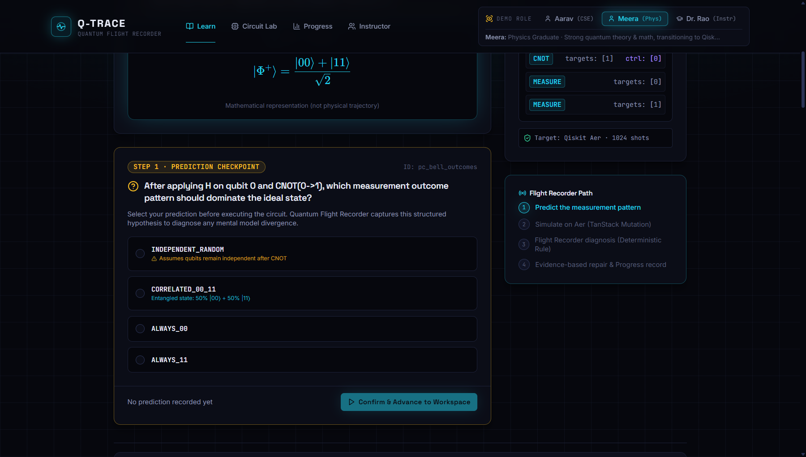
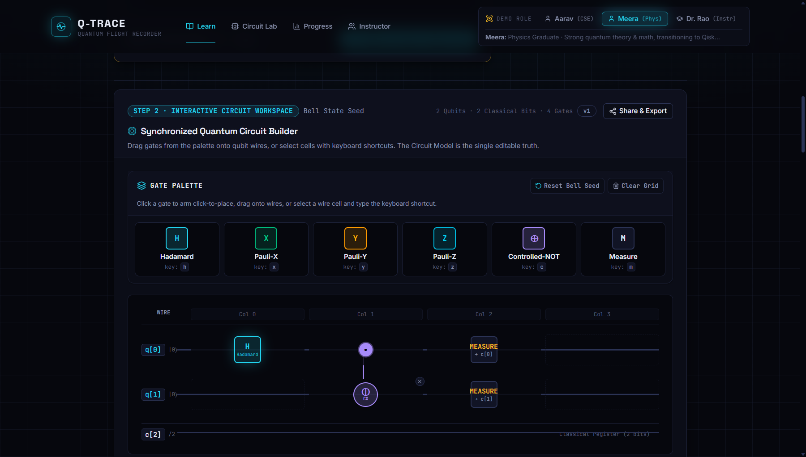
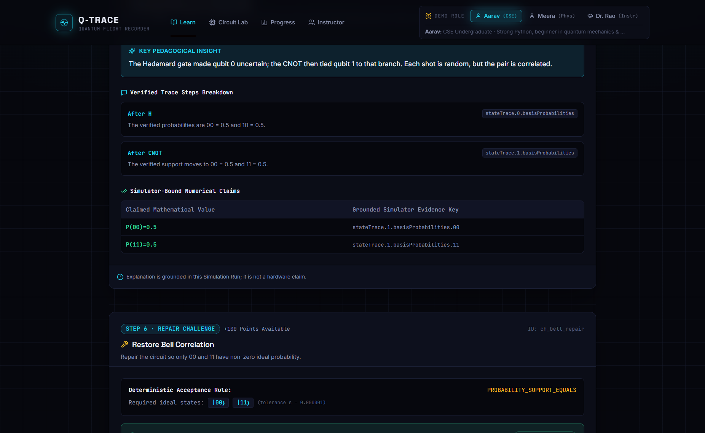

⚠️ Challenges & Problems
Step 1: Predict
Prediction Checkpoint Modal- Hidden Misconception Trap: Learners assemble circuits without quantum intuition; ~50% baseline failure rate without evidence-based feedback (McKagan et al., 2010).
- Uncaptured Hypotheses: Existing tools hide mistakes until final shots, never capturing what the student expected or where their mental model broke.
✨ Innovation & Uniqueness
Core Differentiators
Quantum Flight Recorder
Gate-by-gate state trace replay to locate the exact gate of prediction divergence.
Evidence-Bound AI Tutor
Strictly grounded in real Qiskit statevectors; mathematically impossible to hallucinate.
Dual-Engine Conformance
Qiskit Aer primary verified against PennyLane for multi-framework truth.
Closed-Loop Pedagogy
Unifies prediction, visual build, simulation, diagnosis & repair in one flow.
- Deterministic Diagnosis: Compares student hypothesis directly against simulator statevectors to trigger pinpointed signals (e.g.
SUPERPOSITION_VS_ENTANGLEMENT). - Ground Truth First: AI explains simulator evidence — never invents probabilities or alters quantum counts.
🛠️ Proposed Solution
Step 2: Build & Code
Circuit Grid + Synced Qiskit Code- Visual-to-Code Parity: Interactive drag-and-drop qubit canvas paired with instant bi-directional Qiskit Python code generation via CodeMirror 6.
- 100% Offline Dual Execution: Local Qiskit Aer statevector simulation runs on one laptop without internet or paid cloud infrastructure (DEMO_LOCAL=1).
🎯 How it Addresses the Problems
Step 4: Repair Loop
Misconception Diagnosis & Targeted Challenge- Targeted Repair Challenges: Converts diagnosed misconceptions into active single-gate challenges, boosting conceptual mastery from ~50% to ~80%.
- Progress & Instructor Insight: Live attempt updates learner record and instructor dashboard instantly without invasive surveillance.